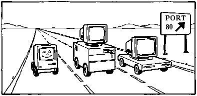

Rules of the RoadYou may have heard the Internet called the information superhighway. It is a better comparison than it sounds. A highway is useful not only because it is fast, but also because everyone on it follows the same rules of the road, so a car from any maker can drive on a road built by anyone. The Internet works the same way. Its rules are written down and published, so a computer from any maker can talk to any other computer that follows them. Whether you use a Macintosh, an IBM PC, or a Sun workstation, you are welcome on the Internet.  The road doesn't care what you drive. You don't drive on this highway yourself. When you type an address, you are writing a note: which store, and what you would like from it. A courier carries the note to the store, and the store sends back a copy of what you asked for, packed in as many small parcels as it takes, each addressed to you. Your Macintosh puts the parcels back in order, and Mill gives you the result: a page to read, a picture to look at, or even a whole application to keep and run on your computer. On the Internet, the rules of the road are called protocols. The note is a request, the store is a server, and the parcels are packets. There are many protocols, because there are many kinds of request. Fetching a page, reading a newsgroup, and looking up a word in a dictionary each have a protocol of their own. The first word of an address names the protocol: http for Web pages, gopher for Gopher menus, news for newsgroups. Mill speaks many of them, and the pages that follow introduce each one. |